個案檔案室
十二封信，十二種說不出口的心情
每一篇都是真實發生過的動物溝通。點開信封讀完整封信，或者用下面的篩選，先看看貓、狗，還是兔子想說什麼。標示「故事準備中」的是已經預約進來、正在整理逐字紀錄的新個案，敬請期待。

- 毛孩說的話
- 照護者說的話
- 溝通師說的話
2023 · 身體不適
「偷偷最近這半個月都不吃飯，越來越瘦。想要了解偷偷在想什麼。」
一連上線，偷偷就緩緩地走過來，乖乖地坐在身邊，就是「我來了」這樣的感覺。沒有感覺到太多的情緒，但是有種疲憊感，似乎在承受著什麼不舒服。
你的主人說最近你都不怎麼吃飯，變得很瘦，想聽聽看你的想法。
「就肚子有石頭在裡面的感覺，在裡面動來動去的不舒服，有時候會硬硬痛痛的。」
你覺得是有辦法治癒的嗎？我可以做什麼來幫助你減輕疼痛嗎？
「是也還好，就是有吃下石頭掉在裡面的感覺。你剛剛幫我做了靈療，有緩和一點，但是沒什麼用。」
「不會死啦。我雖然年紀比較大了，但我還有好幾年可以活呢。只是最近食慾不振，不怎麼想吃東西，吃東西會有石頭在肚子，所以沒什麼力氣。」
那喝水還會痛嗎？
「喝水可以，喝下去不會痛，石頭會浮起來所以會舒服一點。只是食慾不振不想吃東西，吃東西石頭會掉下去就會怪怪的，所以不想吃很多。」
是結石嗎？
「那是什麼東西？我不懂你的意思。」
動物不會用醫學名詞思考。偷偷描述得出「硬硬的、動來動去、喝水會浮起來」，卻完全聽不懂「結石」——這正好說明，牠給的是感受，不是診斷。
重要提醒：半個月食慾不振、體重下降、腹部有硬感或壓痛，都是需要立即就醫的訊號。這次溝通的內容已經全數轉達給照護者，並強烈建議安排獸醫檢查與影像判讀。動物溝通不能診斷疾病，也不能取代任何醫療處置——它能做的，是讓照護者知道「哪裡不舒服、什麼時候比較舒服」，帶著這些描述去問醫生。
最後我把照護者的影像傳給他看，讓他知道是誰委託我來的。
「喔～是姊姊啊？她很關心我，會蹲下來問我怎麼了，摸摸我的臉，很可憐的感覺。我沒怎樣，其實就是沒吃什麼東西、力氣不夠而已，就是吃到石頭讓我的肚子不舒服。」
2024 · 走失協尋
隔年，偷偷走失了。
連上線時，偷偷是安全的。他趴在有濕濕草地的樹叢下休息，那個位置沒有河道，離建築物有一定距離。他會在那裡，是因為想吃吃草，然後順便看看夜空。
我問他現在在哪裡，他給了我一個符號——感覺像是某個路口的交界處。
「我在想姊姊，想要去找姊姊散步。」
「今天能不能不要回家？我明天會回去。」
關於協尋：走失溝通取得的是動物的主觀感受與片段畫面——牠形容的地貌、光線、聲音、氣味，可以幫忙縮小搜尋範圍，但無法給出座標，也不保證正確。協尋期間請務必同步進行實地搜尋、報案、張貼協尋啟事與通報動保單位，溝通只是其中一條線索，不是替代方案。
隔天，偷偷回來了。

- 毛孩說的話
- 照護者說的話
- 溝通師說的話
小貝十八歲了。連上線的時候，他懶洋洋的，眼神還是很柔和，全心全意地感受著生命，平靜地愛著身邊的人事物。
這次委託的內容，和大部分的個案都不一樣。照護者不是要問什麼，是要說一句話。
「希望小貝知道，他只要覺得時間到了，就可以安心地離去，不用擔心我們，也不用熬著病痛。順著時間一起走完最後的日子，可以無憂無慮地去到另一個世界。」
小貝最近身體好嗎？有沒有不舒服的地方呢？
「我的身體很 OK 喔，有點懶洋洋的，睡得比較多，很平靜，有點溫溫熱熱的，很舒服。」
那還吃得下飯嗎？感覺胃口怎麼樣？
「飯吃一點點，很好吃，很快就吃飽了。」
「我覺得現在需要的是睡覺，讓我多補充一點體力，可以好好看看這個家，聽聽家人們的聲音，感受家裡的一切。在最後的時光裡多多留意一些家裡的小細節，這可以讓我很開心。」
然後我把照護者的話，一字一句傳給他。
馬麻希望你知道，如果你覺得時間到了，你可以放心地離開。她不希望你覺得不舒服或是疼痛，她答應你不會再帶你去醫院打針讓你感到害怕，她只希望你可以舒舒服服地過完剩下的日子，沒有煩惱地度過餘生，好好地窩在家。
「打針最痛了，我覺得去完一次醫院我就要復原好久好久，會一直睡。」
「但是不用擔心我。我喜歡現在的溫度和環境，我喜歡陪在他們身邊。雖然還是會想念，但是我已經準備好了。」
「謝謝收留我，我很喜歡這個家。我準備好了，我可以走。變成靈體後我會很輕鬆，我也會偶爾回來看看。不用擔心，我是小貝～」
最後我給了小貝一些補充的能量，讓他在需要的時候可以使用——讓他有時間說再見，安心舒服地，成為小貝。
說明：安寧階段的溝通不處理醫療決策。任何關於用藥、止痛、餵食或安樂死的判斷，都請與主治獸醫討論。這次溝通做的，只是把一句「你可以走了」好好地送到他那邊。
謝謝小貝。

阿臉在外面生活了很久，是那一帶的老大，也是「擋在前面」的那一個。被接進家裡之後，牠吃得好、睡得好，卻每晚固定嘶吼、撞籠子，家人一度以為牠不喜歡這個家。
牠說不是不喜歡——是還放不下街上那群曾經一起取暖的孩子，沒有人在外面幫牠們擋了。牠也第一次說出，被關起來這件事，讓牠覺得自己出不去了、幫不上忙了。
「他們對我很好，會給我吃的、安撫我，但如果我住下來了，我就出不去了——我在外面已經很習慣了。」
這場溝通後來談的不是「牠愛不愛這個家」，而是牠需要被賦予一個「還有點自主權」的角色：知道自己在這裡不是被收編，而是被邀請。這對很多從街頭進入家庭的動物來說，是同一種心情。

珠珠是個對愛很敏感的孩子，連線上的瞬間就跑到跟前，問「你找我嗎」「你喜歡我哪裡可愛呢」。但這次牠的語氣裡，第一次出現了不安。
家裡新來了兩隻貓之後，牠突然覺得自己被要求「當大姊姊」——要包容、要禮讓、要負責照顧新來的。牠說自己空間變小了，也不確定自己還能不能像以前一樣，理直氣壯地當個小孩。
「不要叫我照顧他，把我們兩個當成同樣的年紀來看就好，我只想做我自己，我想撒嬌也想調皮。」
牠不是排斥新成員，是害怕自己在這個家裡的位置被重新分配、被縮小。後來照護人調整了互動方式，特別留出只屬於珠珠的專屬時間——這種「被單獨看見」的需求，在多貓多狗家庭裡，其實比想像中更常見。

- 毛孩說的話
- 照護者說的話
- 溝通師說的話
Biron（發音接近「逼混」）四個月大時在西班牙街頭被救援，後來到德國落地生根。他對人類和大狗都帶著近似厭惡的警戒，時常控制不住脾氣——但那不是惡意，是保護機制的開啟。
他知道自己是來學習如何愛人的。那是他這一生的任務。即便有過那樣的遭遇，他還是選擇相信人，只是有些衝動目前還無法控制，希望能獲得諒解。
2022 · 第一次委託
連上線的時候，Biron 有點無奈。
「又要溝通？這是第 3 次了耶，是不是我上次沒有講清楚什麼的？」
沒有啦。雖然你可以很輕易地感覺到人類的想法，但人類不擅長、也不習慣怎麼跟你們溝通，又因為很愛你，才會一直想找方法問你問題。我幫你們建立連結，你可以幫他們解決煩惱。
「這樣喔？好吧。那你要問什麼就問吧。」
「喜歡新家嗎？自己一隻狗在家會不會不習慣？」
「不會啊！我本來的任務就是好好地愛人，學會如何去愛他們，所以不會覺得無聊。不過人類好像蠻常覺得無聊的。」
「好奇怪，為什麼要一直問我喜不喜歡？以前住的地方很好，現在住的地方也很好喔！」
「只要有他們在的地方就是我的家，我也會好好愛我們的家。」
「為什麼都對別的狗不是很友善？」
「我討厭大狗啊！但小的狗我又看不上。我為什麼要對他們友善？我的任務只有學會愛人而已啊。」
「他們有時候會對別的狗很好，去摸他們，我看在眼裡就覺得吃味，覺得他們是不是因為不喜歡我，才會喜歡別的狗。那我就會發脾氣！」
他們喜歡別的狗狗，不代表不愛你喔。那你希望他們怎麼帶你跟其他動物交朋友呢？
「我想要他們一進到別隻狗的地方時，多看看我、不要一直看別人。先跟我說他們是誰，然後我應該要怎麼做，帶我走一走認識一下。」
「然後站在我這邊教我、指導我，這樣我會知道他們是想要我變好，願意教我怎麼做。」
「還會不會怕小孩？」
「小孩看到我是蠻興奮的啦，但是我看到他們不是很興奮。他們的手摸得很急，我比較喜歡陌生人慢慢地摸。」
「如果我跟小孩相處得好，人類是不是也比較好相處？雖然這不是我的任務，但如果這樣對把拔馬麻比較好，那我會給小孩摸、跟他們玩。」
小孩也是人類啊？你剛才不是說你這生的任務是要學會愛人？
「小孩也是人類？我以為他們是別的動物！」（豁然開朗樣）
「那好吧，我也會愛他們。」
「喜歡新飼料嗎？換了以後又愛吃不吃的。」
「我喜歡吃很新鮮的食物，跟放很久的食物吃起來的味道完全不一樣，就是新鮮感！」
什麼叫新鮮的食物？把拔馬麻給你吃的時候不是都很新鮮嗎？
「要在我看得到的地方打開食物才是新鮮啊！那種食物超新鮮的，我最喜歡！」
那次溝通的最後，我問他有沒有什麼想說的。
「我希望他們可以不要擔心我。有他們在一直都是我的安全感。他們很常帶我出去旅遊，我看過很多風景，我也踩過很多地板。」
「我知道還有很多狗狗不是像我這麼幸福。我很幸福，也很謝謝他們一直包容我的不安和衝動。我希望我們一直都是一家人。我愛他們！」
2024.08.08 · 兩年後
兩年後再次遇到 Biron，情緒上又長大了一點，是個處處為他人著想的孩子。只是他照著人類相處模式做出來的行為，容易讓人誤解他在兇別人——而他自己的解釋一直都是同一句：我長得這麼醜，討厭我是很正常的吧。
這兩年間，家裡多了一個真正的妹妹。
Biron 知道最近媽媽不在家都去哪裡了嗎？
「我知道馬麻最近身體不舒服，常常跑廁所，跑著跑著就跑到門外去了。」
「她有跟我說有妹妹會從肚子出來，所以會有一顆球掉出來，要我好好地陪她玩、照顧這個妹妹。」
「馬麻那陣子都有一個奶味，鹹鹹甜甜的說不上來是什麼味道，但我知道那個是妹妹的味道。」
那你現在還會怕小孩嗎？記得之前你說過小孩很難搞，你不懂小孩為什麼是這樣的生物。
「我只是看他們平常都在尖叫，然後跑來跑去，互相撲倒，所以我也對他們尖叫、撲倒他們。可是他們都不是很喜歡我這樣做——可能我長得很醜吧，明明他們就是這樣相處的啊。」
小朋友的確是這樣沒錯（無奈）。但是狗狗的聲音比較大、力氣比較大，對小朋友來說就會覺得害怕。你們都沒有惡意，都是想跟對方玩，只是都用了不對的方式。
那陣子馬麻的妹妹來家裡幫忙，Biron 每天晚上都跑去跟她睡，不跟把拔馬麻睡了。照護者想知道為什麼。
「馬麻那幾個晚上都睡不好，我怕我吵到她，就都跟妹妹一起睡。我希望馬麻可以睡好、有健康的身體。」
「而且我跟妹妹一起睡，馬麻就可以不用那麼早起準備我的東西。我有妹妹可以用，我找她就好～」
接著問到，每次去公婆家住完，回家後總會鬧肚子。
「我常常有被拋棄的感覺，我怕我長得這麼醜，他們最後還是會選擇不要我，畢竟長這麼醜大家都不喜歡嘛。」
「我去他們兩位老人家那裡住，我也怕我玩太大，他們太老了，可能會不喜歡我這樣做，所以我盡可能不要太躁動。」
「但每次看到馬麻他們來接我回去，我就很開心、超開心，然後一個放鬆就稀哩嘩啦噗～」
原來不是住在那邊不舒服啊？
「兩老都對我很好啊，吃很好也有散步。我只是擔心他們會不喜歡醜狗狗，這也很正常啦！」
他們都很喜歡你啊！而且你一點都不醜，他們覺得你很可愛啦。
「他們覺得我很可愛？」（疑惑）（眼睛發亮）
「真的覺得我這樣可愛嗎？」（不解又開心的表情）
「他們覺得我很可愛？」（開心得到驗證，但又很疑惑這到底是不是真的）
「有什麼話想對我們說？」
「我一直以來都生活得很開心，我很幸福可以成為這個家的一份子。」
「現在我也有妹妹了，我也可以像馬麻一樣照顧別人。如果能幫她分擔一些工作我就會去做，如果有需要我的地方也可以隨時告訴我。」
「我很愛這個家，我也會守護這個家。能在這裡長大真的是太好了～」
「可以請 Biron 對來家裡的客人友善一點嗎？每次有人來他就會一直叫又撲人。」
「因為馬麻也是一見到人家就熱情地撲上去，把拔也會大聲問好啊。所以我覺得我也應該要這麼做——一見面就要大聲問好，然後撲上去抱抱，幫他們做好面子！我是一個乖孩子！」
那你可以學習等待，還有問好的順序。客人來訪的時候，先讓馬麻他們打完招呼、說完話，你靜靜地等在旁邊。等輪到你的時候，馬麻會轉過頭來叫你，或者客人會蹲下來跟你問好。
「我只要耐心地坐在那？什麼都不用做？不用第一時間就打招呼，只要等到他們轉過來看我、叫我，再換我打招呼就好了嗎？」
「那馬麻什麼時候回來？我想她了。」
「我也可以看看妹妹吧？可以舔她的臉嗎？」
2022 年，Biron 說他這一生的任務是「學會愛人」。2024 年，他說「我也可以像馬麻一樣照顧別人」。中間隔著一個妹妹的出生。
他撲客人，是因為他看見馬麻撲客人；他對小孩尖叫，是因為他看見小孩對彼此尖叫。他從頭到尾都在模仿他所理解的「愛」，只是沒有人告訴過他，那些動作在人類這裡是什麼意思。
而「我長得這麼醜」這句話，他說了兩年，一直沒有人反駁過他。這次有人反駁了，他問了三次是不是真的。
Biron 的故事橫跨兩次溝通，是這裡少數的長期個案。他讓人看到，動物的情緒不是靜止的——牠們也會在時間裡，慢慢學會安全感是什麼樣子。
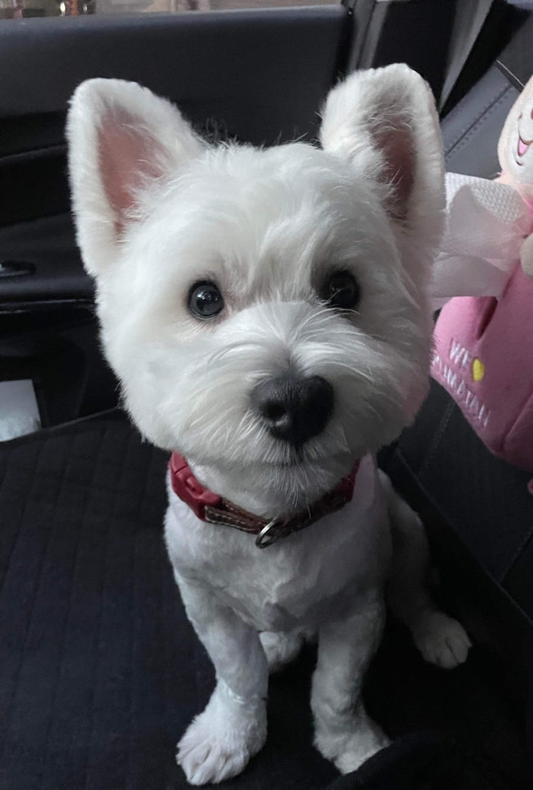

3歲的 Killua，最讓照護人頭痛的是：不管憋多久，牠一定要等媽媽回家才肯尿尿，也因此常常在外過夜或托育時亂吠、漏尿，讓幫忙照顧的親友很困擾。
連線上的 Killua 說，牠一直都聽得懂媽媽的心情，只是不知道自己「應該」什麼時候尿尿——牠把「憋到媽媽回來」當成一種被誇獎的乖，也把大叫當成一種呼喚媽媽聲音的方式。
「我想等她回來帶我去尿尿啊，這樣我才會被誇讚是好孩子……大叫可以讓我聽到她的聲音，也能舒緩憋尿的不舒服。」
問題被重新翻譯之後，變得很不一樣：不是牠學不會、也不是牠故意搗蛋，而是牠把「等待媽媽」誤會成了乖巧的定義。照護人開始練習在離開前，明確告訴牠「可以自己尿尿」，情況也慢慢鬆動了。
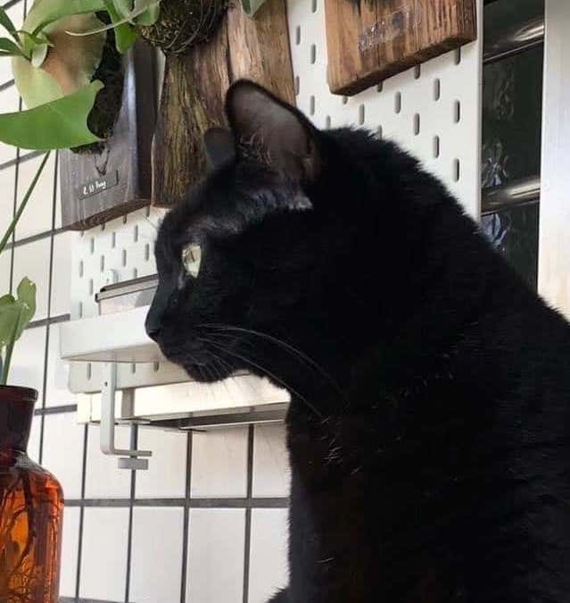

咪咪很怕生，卻對熟悉的人充滿依戀，牠自己形容過那種矛盾：喜歡討摸摸，但太喜歡一個人之後，反而更害怕有一天看不到他，於是乾脆先躲起來。
搬到新家之後，牠最想念的是以前那個能自己待著看風景的窗邊角落，那是牠一個人也不無聊的地方。得知家裡客廳即將改成工作室、多一位常駐的人，牠先愣了一下，才慢慢問起「那我要幹嘛」。
「我太容易投入情感，太容易付出真心，但變化太大的時候會承受不住，所以會想念，但同時又顧及大家的心情，就焦慮了起來。」
這場溝通後來聊的重點，是幫咪咪找回一個屬於自己、能眺望遠方的小角落——環境可以變，但只要留一塊熟悉的地方給牠，牠的不安就會小很多。
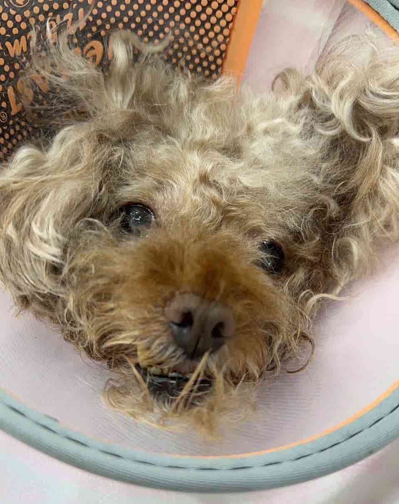

奴比是隻安靜又甜美的女孩，牠的靈性很高，卻不太在意自己身體的疼痛——連線上牠第一句話說的不是「我不舒服」，而是家人有沒有因為牠而變得比較開心。
牠形容自己吃了一根細細長長的東西，睡了一覺醒來已經在醫院，看到家人來探望才安心。牠不害怕住院，只是體力不像以前，睡得多、躺得多，最想快點拿掉頭套，好好看清楚身邊的每個人。
「我想要他們多多抱我，即使我的身體不好，他們也不需要擔心，我是他們的乖孩子。」
整場溝通裡，奴比幾乎沒有替自己要求什麼，牠在意的始終是家人有沒有笑、有沒有安心。這種「先照顧別人的情緒，才想起自己」的姿態，在許多高齡動物的溝通裡，都能看到相似的溫柔。
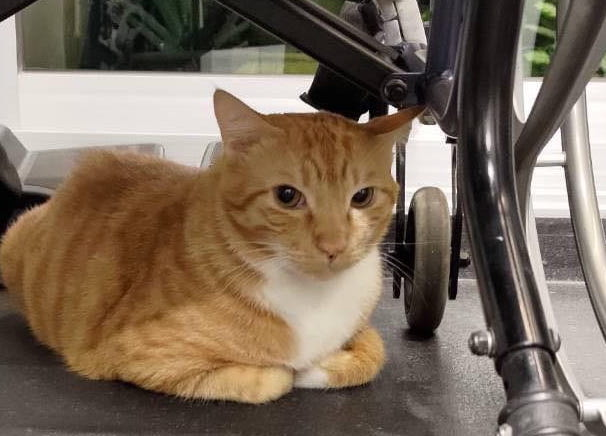

丁丁聰明、帥氣，也很清楚自己想在這個家、這片街區當老大——牠對妹妹的食物被分走感到嫉妒，也習慣用打架來確立地位，每次打完都餓得想回家大吃一頓。
溝通裡，牠第一次聽到另一種當老大的方式：像獅子一樣，靠交朋友、分享愛來建立地盤，而不是靠武力。牠愣了一下，說自己從沒想過「當夥伴」也可以是一種力量。
「打架容易肚子餓，不過我現在手很有力，打架很強！但如果朋友變多，我的地盤也好管、也有勢力，這個主意我覺得不錯。」
丁丁最後也鬆口，願意把家裡的一樓分給妹妹住——牠不是不能分享，只是需要有人把「分享」翻譯成牠聽得懂、也覺得夠帥氣的方式。
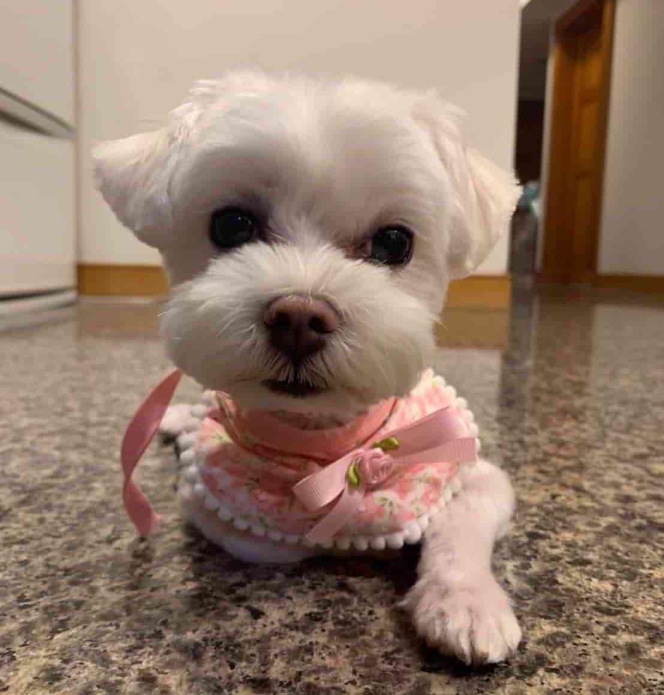

Qbi 體態嬌小，個性秀氣又謹慎，走每一步路都像在計算會不會受傷。牠在意的不是不愛家人，而是自己太小了——大隻的狗、大聲的人類，光是被盯著看就會讓牠想躲起來。
牠也解釋了為什麼出門在外從來不尿尿：附近能尿的地方早就被其他狗佔領了，牠怕留下氣味惹禍上身，加上散步時常常被拉著走得太快，想尿也來不及。
「爸拔有點兇，講話聲音很大，碰撞的聲音很多，所以我會坐很遠，但我是愛他們的，只是容易害怕，我很膽小。」
牠提出了一個具體的請求：希望家人蹲下來、用溫柔的手掌邀請牠，而不是居高臨下地叫牠過去。一個小小的姿勢調整，往往比一百次呼喚更有用。
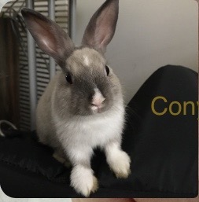

Cony 覺得自己一點都沒有「亂」尿尿——牠只是選了自己喜歡、有自己氣味的地方。牠抱怨過指定的地點地板冰冰的，又硬又滑，蹲下去很不舒服，加上碗放得太高，吃東西很費力。
牠也在意「被稱讚可愛」這件事，一旦覺得家人比較常說別的兔子可愛，情緒就會明顯低落——兔子雖然沒有表情，內心其實很澎湃。
「我喜歡自己的味道啊！廁所那裡我的味道好少，我想要有多一點自己的空間。」
兔子是極度討厭麻煩、又很有主見的小生物。後來照護人試著把「亂尿」的地方擦乾淨、沾一點牠的尿引導到指定位置，並調整了碗的高度，狀況也慢慢穩定下來。
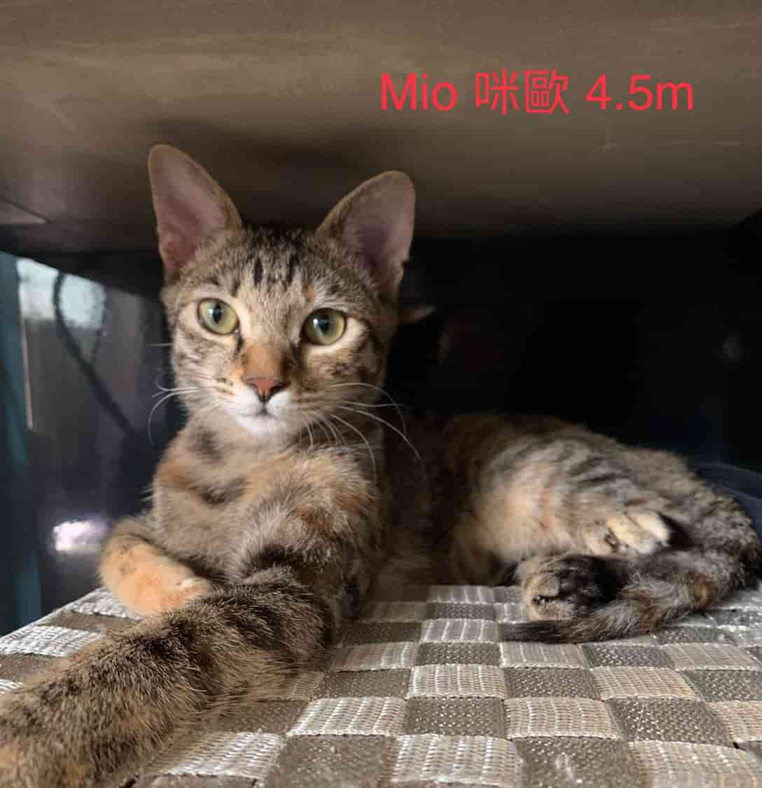

Mio 是隻聰明又愛玩的小貓，牠對「偷尿尿」這件事的解釋，跟大家猜的完全不一樣：牠不是在報復，只是單純喜歡布料柔軟的觸感，而貓砂盆裡的顆粒踩起來普通，有時候還會卡進腳趾縫，不太舒服。
牠也很有地盤意識，一聽到「這樣衣服會被人家嫌棄」，立刻炸毛：「誰敢欺負我 Mio 的東西？不可以！」——牠在意的其實是自己的所有物有沒有被尊重。
「布的感覺比較舒服，摸起來爽爽的，貓盆偶爾會進去一下，但手感普通。」
後來照護人換了幾種不同材質的貓砂，讓 Mio 自己選出喜歡的觸感，問題很快就解決了。很多被解讀成「情緒性行為」的小狀況，答案其實藏在最基本的身體感受裡。
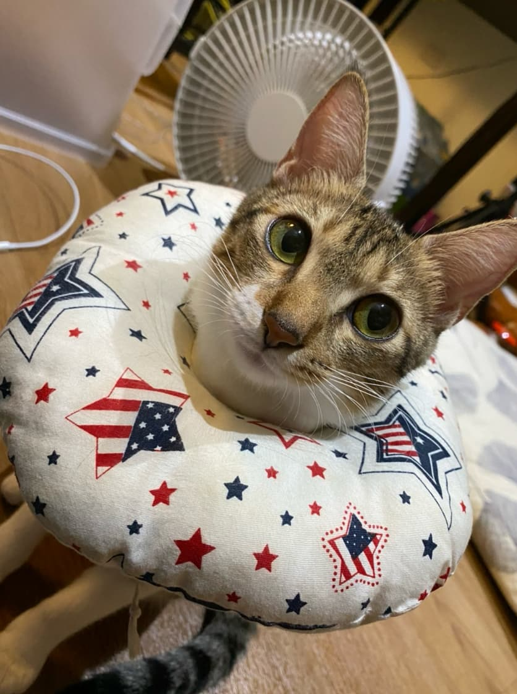

- 毛孩說的話
- 照護者說的話
- 溝通師說的話
飯飯是白底虎斑的女生，第一次溝通時七個月大。照護者問的是最普通的四個問題：喜歡吃什麼、被撿到之前過得怎麼樣、還想不想有貓咪作伴、有沒有什麼想跟我們說的。答案卻一路歪出預期。
「喜歡果凍感的肉。可是我不知道不同的肉有什麼差別耶？有時候好吃，有時候腥味比較重。脆脆的咬起來也很好吃——不過我都用吞的喔。」
「早上起床想吃多一點。但也不要給我太多，因為我怕胖。我在外面看過成年的胖貓，感覺很兇。我不想變兇，這樣會被討厭。」
七個月大。她已經在計算，怎樣的自己會被喜歡。
問到被撿到之前的生活，她說印象不深了。
「藍天白雲，一條乾涸的水溝旁邊。幾隻顏色跟我不一樣的小貓，還有一隻棕色的、邊邊白白的大貓。」
「現在只有我跟媽媽。我有自己的大床，還有朋友。我很開心。」
動物講到不舒服的記憶時，常常會自己把畫面停在一個安全的地方。收容所那一段，飯飯沒有多說——不是不記得，是選擇不看。
被問到「有什麼想跟我們說的」，她提的是一個很小的要求。
「離開家，如果天黑以後才回來，可以開一盞小燈嗎？再放一個有你味道的東西，讓我可以窩進去。這樣我會比較安心，因為我的朋友很久才來一次。」
「我醒來發呆的時候，如果有一個地方可以讓我聞著你的氣味、等你回家，就更好了。」
兩週後的電話對答案，照護者又追加了兩個問題。第一個是：
「飯飯最近很少打呼嚕，是為什麼？」
「我有呼嚕嚕啊。怎麼可能不呼嚕嚕？沒有呼嚕嚕不是很奇怪嗎？」
「不過……最近的確有重重的感覺。空氣重重的，眼皮很容易掉下來。最近媽媽都會陪我玩得很瘋。」
我問她，那家裡放一點香香的味道給妳聞，會不會比較舒服？
「那是什麼味道？我沒聞過，我不知道。……像媽媽的手一樣的味道嗎？」
「香香的味道。粉粉的味道。」
第二個問題，是這次溝通真正的轉折。
「飯飯最近很愛講話，是在表達什麼？」
「你看我最近的毛，是不是很漂亮啊？」
「你們大部分問我的是『餓了嗎』『想玩嗎』。你們好像沒有聽懂我的意思——我想要聽到的是：要誇讚我很漂亮、很可愛啊！」
她喵喵叫的時候，要的不是罐頭，是誇獎。有些誤會不是不愛，是頻道對錯了。
另註：若毛孩突然改變作息、食慾或叫聲頻率，仍建議先安排獸醫檢查，排除生理因素後再從溝通面調整。
飯飯是這裡少數「原本沒有問題要解決」的個案。照護者只是想認識她。而她想被認識的方式，是被誇一句漂亮。
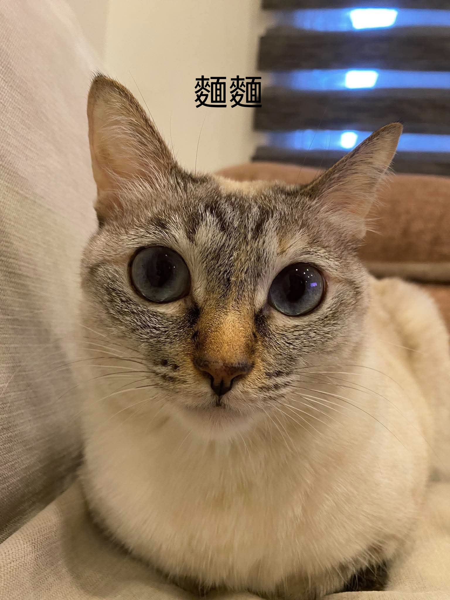

- 毛孩說的話
- 照護者說的話
- 溝通師說的話
麵麵是飯飯家的二貓。2022 年 8 月我第一次到府時，她還在非常怕生的階段，照護者正在進行隔籠親訓——已經第七個月了。餵零食肉泥都會被哈氣。所有人都下了同一個結論：她個性就是這樣，就是派，就是不親人。
那天回家的路上我一直唸著這件事。當晚還是傳了訊息過去。
「忘了跟妳們說，可以每天看著麵麵的眼睛說『我愛你』，給她療癒的能量。邊摸她，也可以在心裡傳遞愛的訊息，多多想像從手心散發出翠綠色寶石的療癒之光給她。」
「愛的能量可以補充她現在缺乏的精力，也有助於讓她瞭解妳們的心意。趁這個機會，建立起彼此之間愛的溝通管道。」
說明：療癒之光是給照護者的日常練習，作用在關係與陪伴品質。麵麵當時的傷口照護與復原，全程仍由獸醫負責，溝通不取代任何醫療處置。
「真暖。真好。」
「收到了。」
照護者當晚睡前，好好地把那些話傳達給了麵麵。然後是隔天早上。
「我要跟你講超神奇的事——麵麵居然好像了解了我們心意一樣，開始跟我大撒嬌耶。」
「完全完全沒有意料到，他是會對人類撒嬌的貓。我還錄影要給你們看。」
而在她們一起看那支影片的同時，我收到了麵麵的一句話。
「我現在才知道，原來妳是愛我的。」
照護者後來傳了一段很長的訊息過來。我讀了很久。
「厚，我真的被暖哭。然後深深反省自己。因為我們都超重視飯飯的感受，都以不想飯飯受傷為主。而且我們親訓了七個月，麵都還很派，就覺得她個性就是這樣——她連我們餵零食肉泥都會哈氣，更不可能親人。」
「薩摩白一講，我真的徹底覺悟：完全沒講過愛她啊……都忘了她這個小生命需要我們的愛。」
「被她撒嬌萌到，又超心疼她這樣誤會這麼久。」
七個月的隔籠親訓，麵麵一直以為那只是規矩。她不知道那是愛。
多貓家庭最常見的傷，不是偏心，是「我以為她不需要」。當家裡有一隻比較敏感、比較需要保護的孩子，另一隻往往會被歸類成「她比較沒事」——然後那句該說的話，就一直沒有說出口。
飯飯教這個家「聽」：她喵喵叫的時候，不一定是餓。麵麵教這個家「說」：她等的不是罐頭，是一句從來沒有人對她說出口的話。
「在你們昨天踏進來以前，所有來過、見過麵的朋友，一定都無法相信這一幕。」
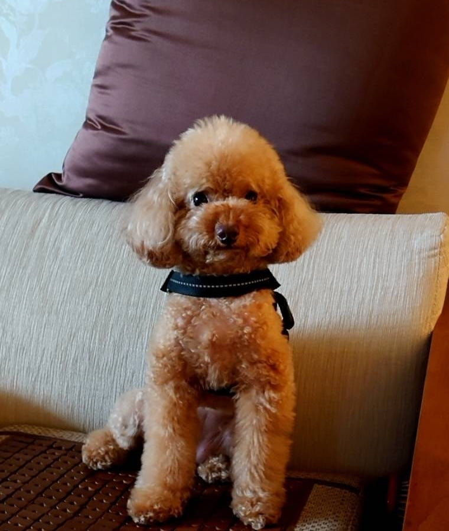

- 毛孩說的話
- 照護者說的話
- 溝通師說的話
Lucky 是長耳朵的貴賓女生，2019 年 3 月出生。第一次溝通在 2020 年，她才一歲多，問題都是很日常的：飲食、交朋友、跟阿公阿嬤相處得好不好、看到陌生人可不可以放輕鬆一點。
「她的飼料確實就是上面會撒一點有口味的零食。昨天她似乎知道我們要跟她聯繫，一整天比較緊繃、有點反常，然後溝通完她就安心了，心情很好、吃飯、還睡過夜了。」
兩年後，家裡多了一個妹妹。Lucky 因為對北鼻兇了一下，被暫時送到阿公阿嬤家。照護者再次找上門。
連線的時候，Lucky 很乖巧地靜靜走進來，順順地給摸摸，想讓大家都知道她是一個很乖的孩子。但她有些寂寞——好像已經很久沒有人陪她一起睡覺了。三餐正常，也都會出門散步，只是最近比較常看著家人往別的方向看，而比較少看向她這邊。
還沒開始聊正題，她先交代了一件事：要跟阿公說，多多注意身體健康。
「我很想念很想念馬咪看著我、揉著我的臉的感覺。很久沒有這樣過了。」
「想關心她，可以接受媽媽生的孩子嗎？」
「你說那個味道很奇怪的小孩嗎？那是馬咪的小孩，所以我喜歡啊。」
「但是有一次我因為嫉妒對著北鼻兇了一下，剛好被馬咪看見了，所以她就不高興，把我送到阿嬤這裡。她說我應該要好好當一個姊姊——可是我才年紀這麼小，北鼻看起來比我還小，我們都這麼小，可是把鼻和馬咪卻都只看著她、不看我，所以我有點嫉妒。」
剛誕生的新生命很脆弱，所以他們才會更呵護小朋友，就像當初妳還很小的時候，把鼻馬咪陪伴妳長大那樣。他們已經把妳當成一家人在生活，所以自然也會希望妳可以當一個稱職的姊姊。他們還是一直愛妳，只不過現在比較需要把注意力轉向小北鼻身上。
我帶妳去看看比較遠一點的時間——幾年之後小朋友會慢慢長大，變得比妳還要大的時候，反過來換她照顧妳。妳看著長大後的她，也會覺得很開心吧？
「的確！在那個時候，我很開心我有好好地陪她長大、生活、茁壯。所以她變得比我還要大的時候，我可以感覺得到她很愛我，比把鼻和馬咪還要愛我——因為我們曾經一起長大，是玩伴、夥伴，也是羈絆，比誰都要親。」
「所以不管我多老，她看著我，眼裡都放著光和愛。」
然後她說了這次溝通裡最重要的一段。
「我希望他們可以帶著我好好地認識她。因為我跟她很不熟，氣味也很不一樣，我不知道怎麼接近她。我上次被嚇到了所以吼了一下，就被罵了。」
「我希望他們不要罵我，而是帶著我一起認識小北鼻，告訴我應該要怎麼照顧她，告訴我要怎麼樣才是一個好姊姊，我可以做什麼事情幫他們照顧好家裡。然後我會學著當一個姊姊，多一點責任感，做好我的工作——但我想要他們帶著我一起去看娃娃，我也很想認識她。」
「現在在阿公阿嬤那生活可以嗎？」
「可以啊！每天都有吃飽，也都很健康，也都會去散步。可是阿公阿嬤最近也都比較常往外跑，都沒有看看我。」
「晚上我自己一個人睡覺好寂寞，我想馬咪。我自己一個人睡的時候會很無聊，也沒有人跟我玩，我就盯著空間，可是沒有事情可以做，我就想馬咪。」
「阿公阿嬤說毛孩晚上眼睛會腫腫的，想知道她最近的心情，別自己偷偷哭。」
「眼睛會腫腫的？我會哀嚎一下，但我應該沒有哭。我想馬咪和把鼻，覺得很久沒看到他們了，不知道他們有沒有想我。」
「我希望他們可以多多看看我，多多誇我好棒、好厲害，這樣我一整天都會很開心，都會充滿能量。他們以前每天都會跟我說，現在不會了。」
妳知道妳為什麼會來到他們身邊嗎？
「我知道啊！我決定要來守護他們這個家，他們之間的連結是我，我一向都做得很好。他們很誇讚我有好好地守護這個家——只是現在不這麼說了，都只誇寶寶。」
「我可以感覺得到同樣的能量，只是我以為那不是我的、我不能用，所以我覺得很氣餒。但是因為我可以守護這個家，所以我也願意分享同樣的愛和能量給這個幼小的生命。」
問到最近換了新的地方洗澡美容可不可以，她的回答讓整段對話輕了一下——也重了一下。
「可以啊！他們覺得我臭臭的時候我就會去洗澡，所以我一直都會很香。」
「可是他們是不是覺得我很臭啊？因為我覺得小北鼻很臭的時候，他們都說很香；我覺得我臭的時候，他們就覺得我臭？」
最後，照護者請我轉達：雖然現在暫時無法天天生活在一起，但等寶寶長大、Lucky 也可以接受了，隨時歡迎回來。
「我很想回家當一個好姊姊，做到自己的責任。我會長大，好好一起照顧小孩。」
「我現在知道他們不是想要遺棄我，只是我一時鬧脾氣，所以才會暫時把我隔開。我知道我可以做到的——可是我想要他們帶著我、告訴我怎麼做，告訴我他們希望我可以怎麼完成我的任務，把工作交給我，然後我就會努力地把我的工作都完成！」
「謝謝你的回覆，看了熱淚盈眶，同時似乎也要消化一下這個情緒。」
「沒想到毛孩覺得自己是這個家的守護者。謝謝她的心意。」
「隔離」和「被丟掉」，在狗的理解裡幾乎是同一件事，除非有人明確地告訴牠不是。
Lucky 要的從來不是回家，是一份工作。她不需要被安慰，她需要被指派任務——因為在她的認知裡，守護這個家，本來就是她自己選的。

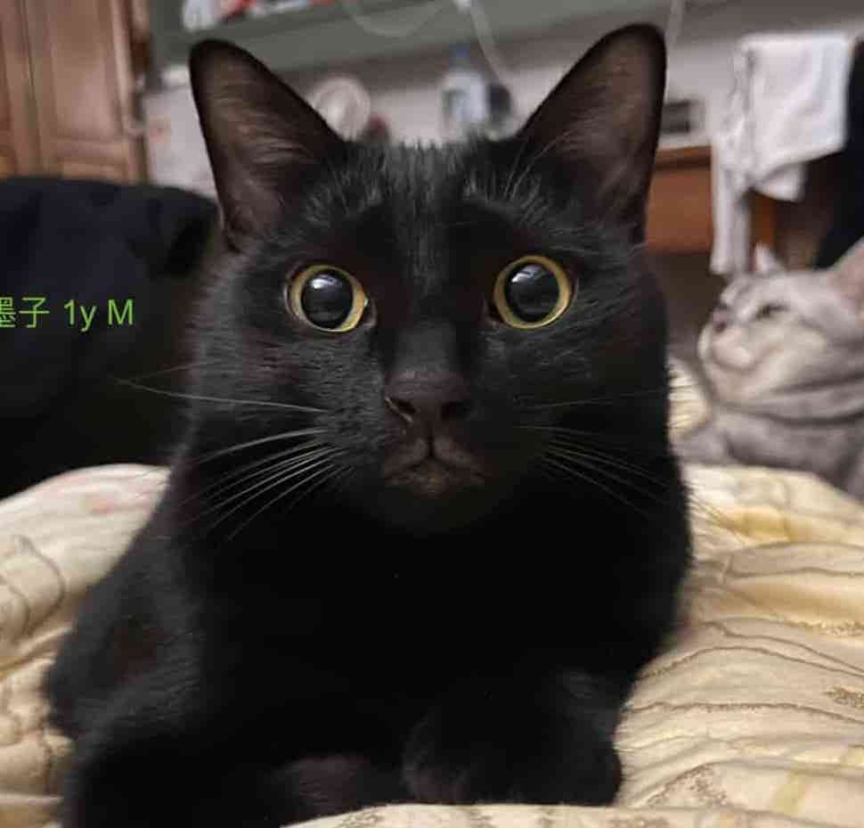

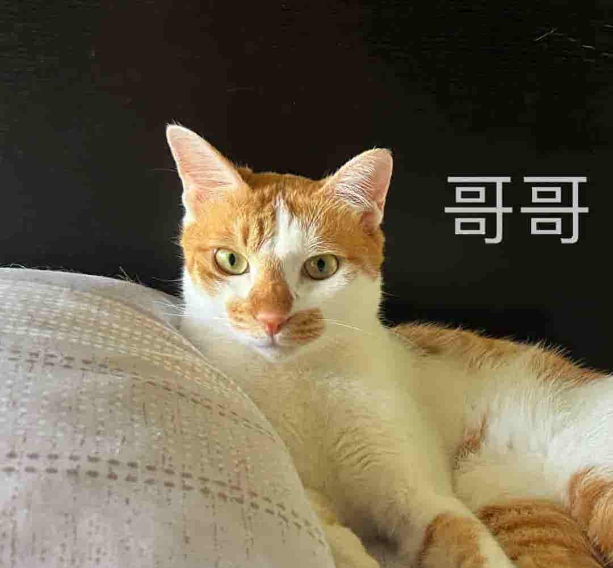
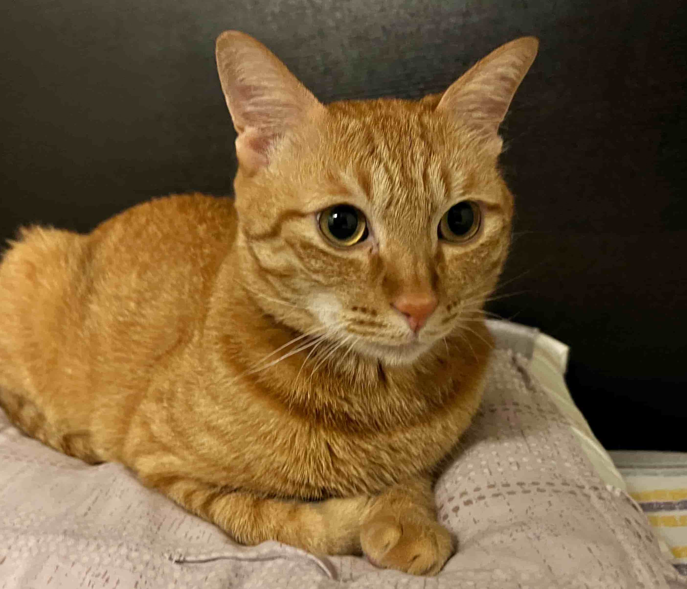
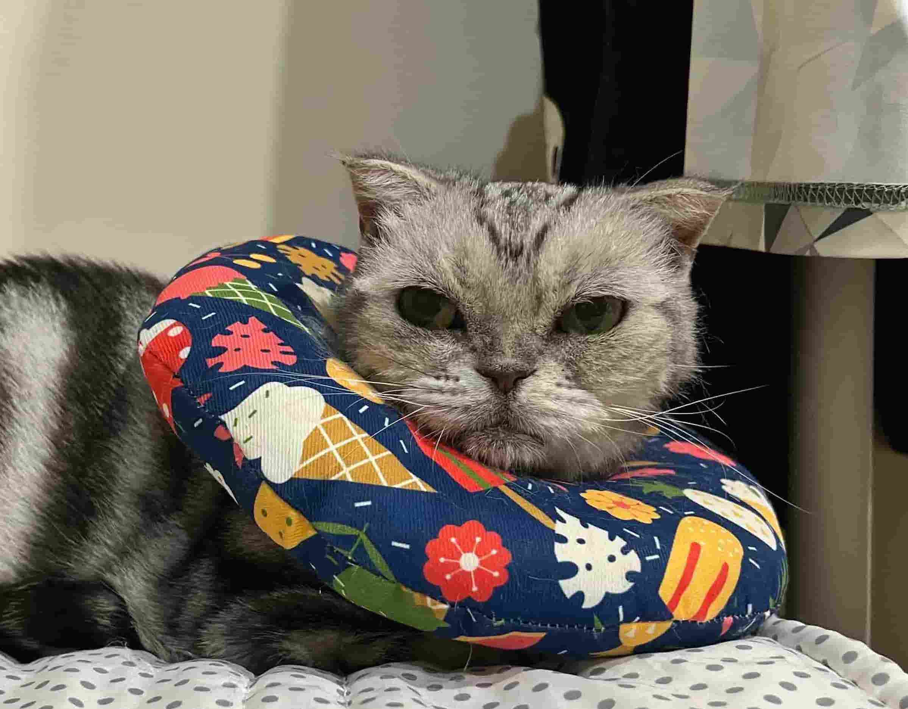
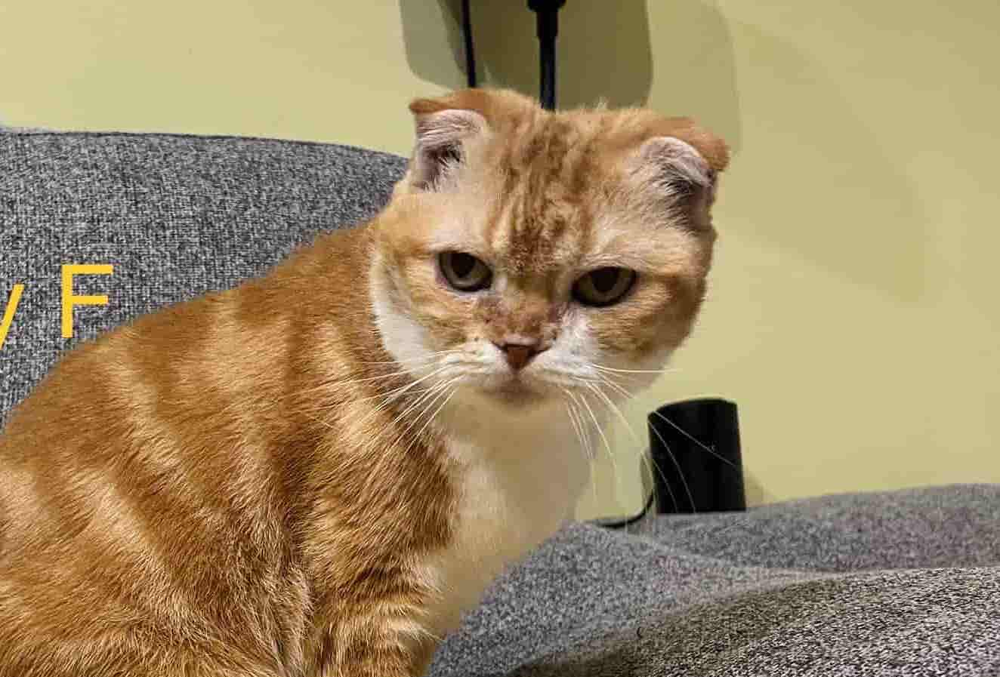
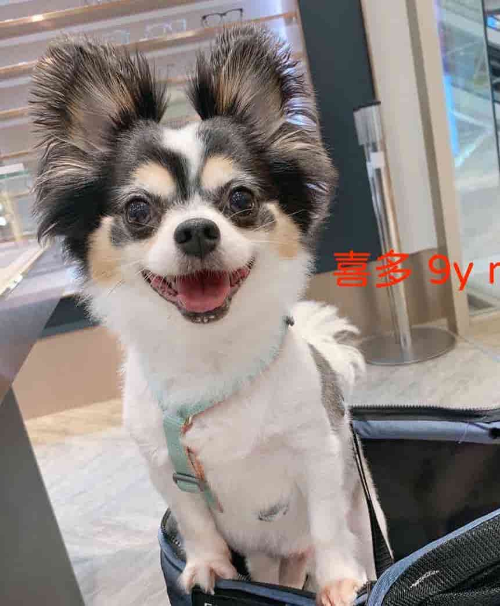
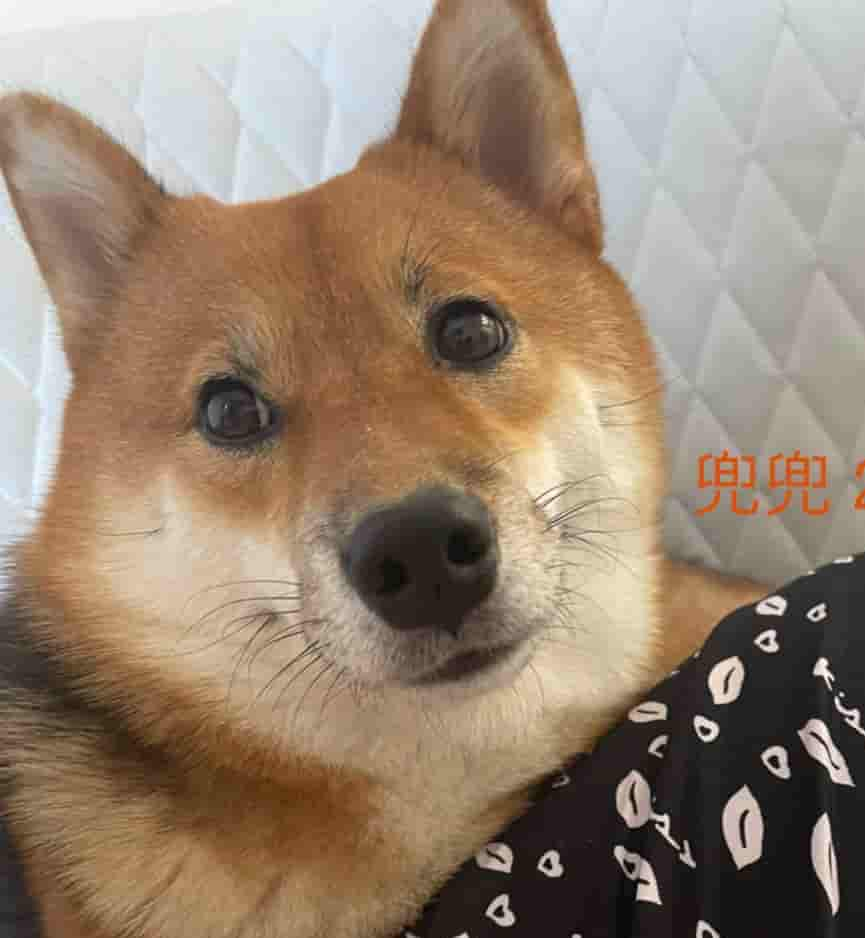
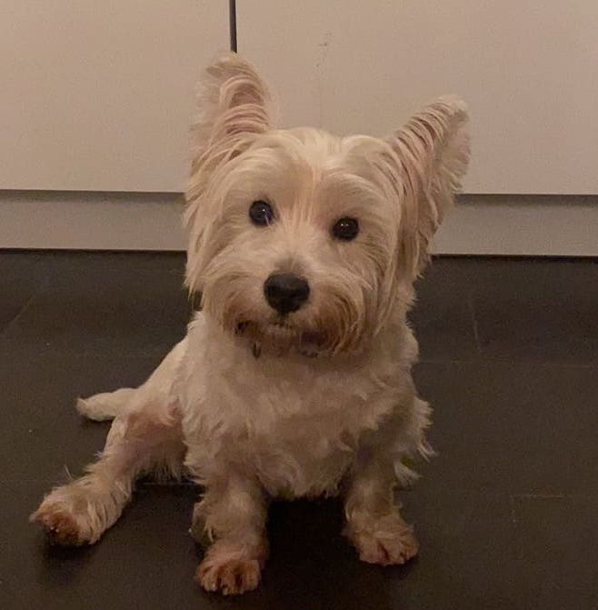
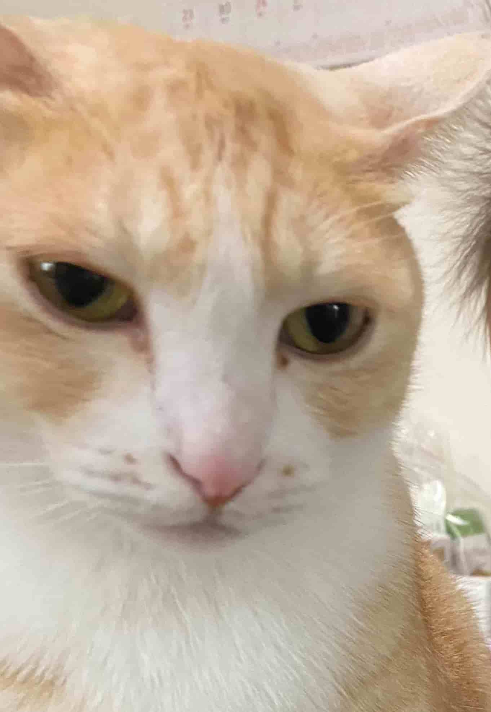
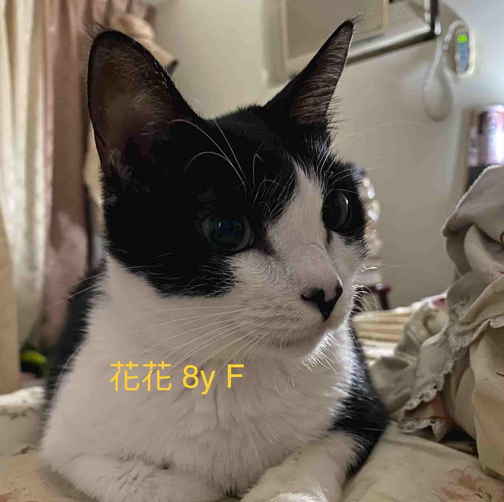
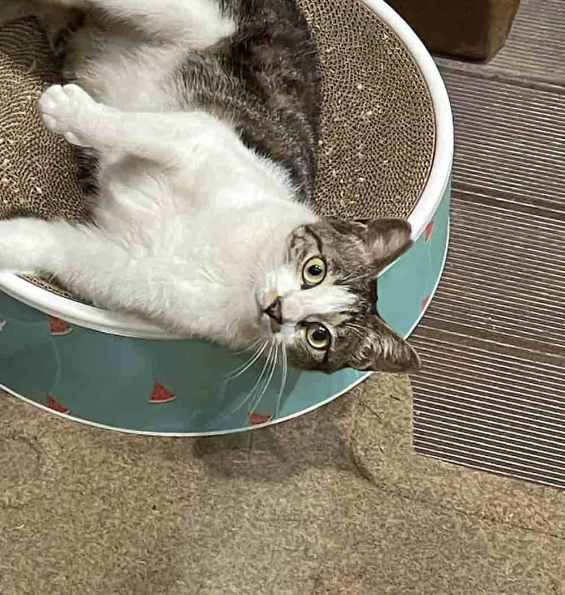
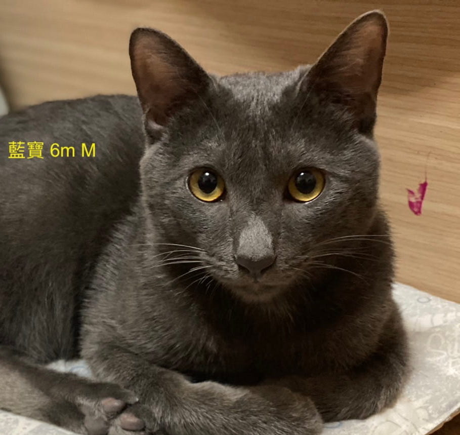
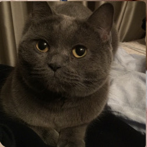
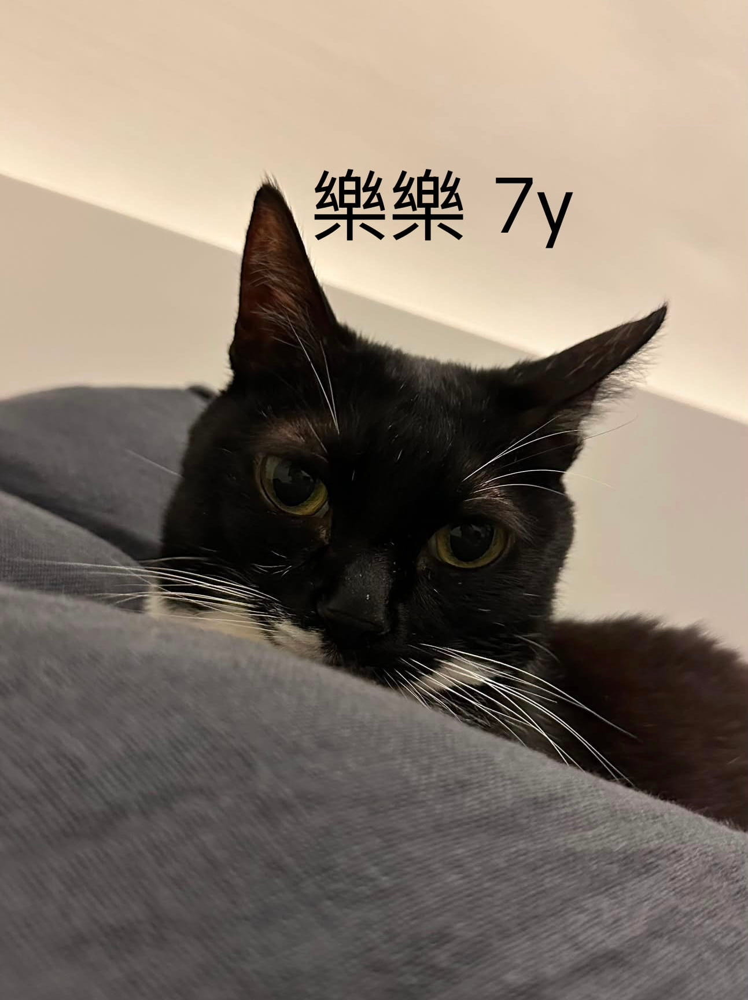